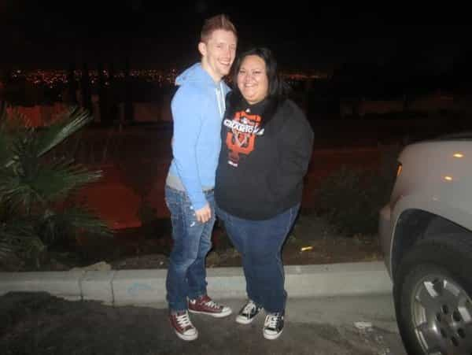

Hesse Kassel is an Australian economist. He stopped chasing money and chased women and made children instead. He blogs right here


Today I read an article called 5 Reasons To Date A Girl With An Eating Disorder. I was shocked by some of the attitudes displayed, especially the idea that men should prefer slim girls. Don’t these people know that all women are beautiful?
Some of the comments were shocking too. So much hate. So much negativity. It almost seemed like some people felt insulted. Personally, I prefer that everyone get along well. So please try to see the titillating side of obesity as you enjoy these six reasons to date an obese girl.

Building muscle and getting strong has always been an obsession in the manosphere. It’s so hard to find the motivation to attend the gym regularly, though. Wouldn’t it be great if there was a way to lift heavy without even leaving the bedroom? There is an easy solution to these problems.
Pregnant or fat?
Raw dogging is the last word in pleasure, but it comes with all kinds of risks. One benefit of obesity is that it reduces fertility. For a man who doesn’t want children, it acts as a convenient natural contraceptive. The expected child support load is less for each load ejected. Thrust the risks to the back of your mind and plow straight ahead with a feeling of safety and security.

Eventually you will get tired or disgusted of having sex with your girl. This allows you to focus on other tasks like work or reading. Instead of being a sex-crazed maniac all the time, you can look forward to being productive during the inevitable periods when you can’t bear to have sex with your obese girlfriend.
Sexual scarcity is a fact of life for men. Every man has gone through dry spells. Lack of success can snowball as confidence is lost. Sexual health and function will start to droop if not exercised regularly—it’s use it or lose it. Offer your sausage to those who really love sausages and do your part to feed the starving.
Debates rage over the relative merits of day game and night game. Men write serious, sober articles about relative returns to their different types of pickup efforts. Imagine intercepting your girl as she picks up that third bowl of ice cream. Your wingman helps you isolate by discretely neutralizing a cockblocker at the cake table. Go where the really big game grazes. Be the first to write a post about buffet game.
Everything is a circle. No phase continues forever. There will come a time when a man will regrettably have to give up the delicious sexual buffet that obese girls can provide. It’s only the result of patriarchal brainwashing, of course, but afterwards those lesser girls will give so much pleasure. Release from your obese girl phase may intensify some other kind of release.
I didn’t even mention looking slim by comparison, access to her slimmer friends, more surface area for expressive tattoos, improving the gene pool, and greater floatation for your boat.
So next time a BBW walks by, don’t look away. Hide your disgust and try to see her as a kind of larger, sweatier red pill. See it as an opportunity to go on a journey into the heart of something luscious. Remember, everything that leads to comfort leads to weakness. Take the plunge, and you may find yourself a better man afterwards.